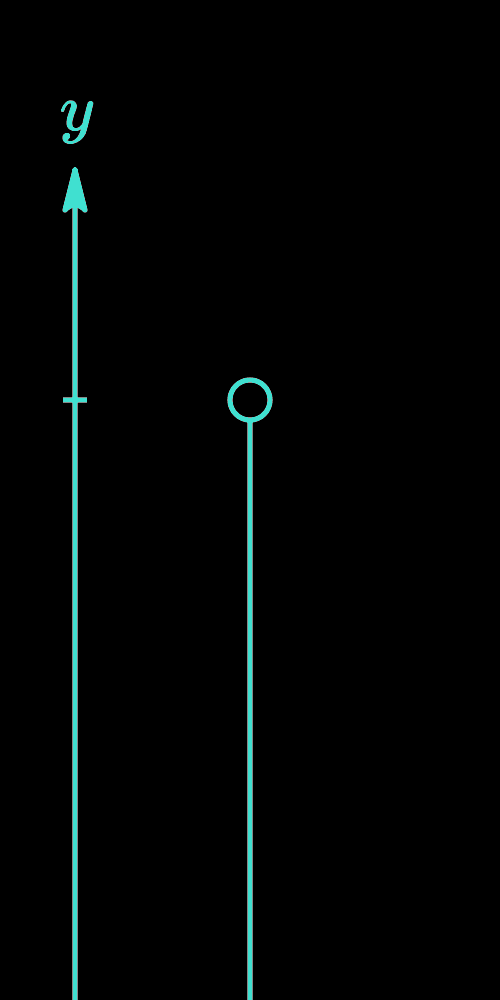
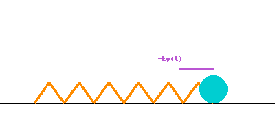
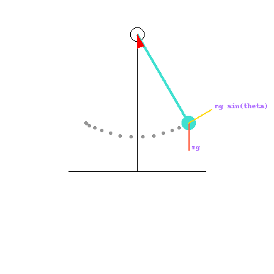
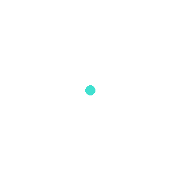

The decay rate is proportional to the amount present:

Gravity accelerates, air resistance brakes:
Velocity approaches a terminal value.
The restoring force is proportional to displacement:


A swinging pendulum obeys
Growth slows as the susceptible pool empties:
